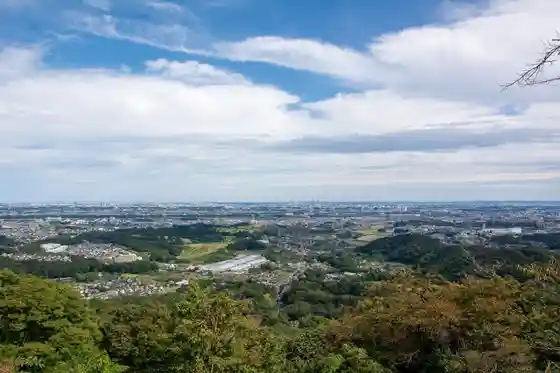
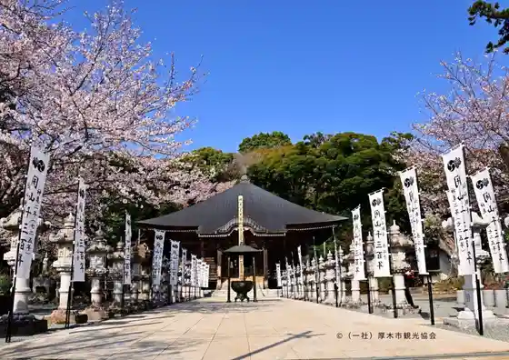
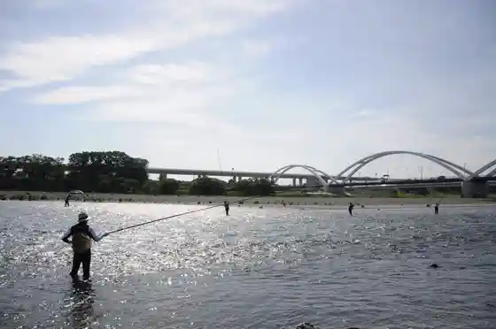
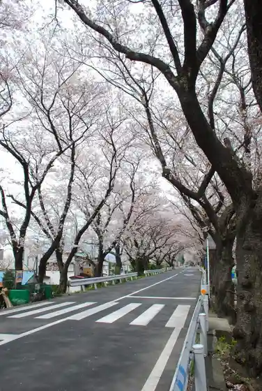

Iiyama Hakusan Forest Park Lookout
Atsugi, Kanagawa · 046-240-1220 · Official / source link

Iiyama Kannon Hase Tera
Atsugi, Kanagawa · 046-241-1635 · Official / source link

Sagamigawa Kasenjiki
Atsugi, Kanagawa · 046-225-2820 · Official / source link

Sagamigawa Mikawa Goryuten
Atsugi, Kanagawa · 046-225-2820 · Official / source link

Koganei Shuzo
Atsugi, Kanagawa · 046-248-0124 · Official / source link
Atsugikodomo no Mori Park
Atsugi, Kanagawa · Official / source link
Kameishi
Atsugi, Kanagawa · 046-248-1102 · Official / source link
Tsumada Kusurishi
Atsugi, Kanagawa · Official / source link
Ko Minka Kishi Tei
Atsugi, Kanagawa · Official / source link
Wakamiya Park Umezono
Atsugi, Kanagawa · Official / source link
Kanagawa Kokadaigaku Atsugi Kodomo Science Museum (Puranetariumu)
Atsugi, Kanagawa · 046-221-4152 · Official / source link
Atsugi Hera Funa Center
Atsugi, Kanagawa · 046-245-1063 · Official / source link
Iiyama Hakusan Forest Park
Atsugi, Kanagawa · Official / source link
Kanagawa Prefectural Nanasawa Forest Park
Atsugi, Kanagawa · 046-247-9870 · Official / source link
Atsugi Gurasusutajio
Atsugi, Kanagawa · Official / source link
Fudo Shiri Gorge
Atsugi, Kanagawa · 046-240-1220 · Official / source link
Thunder Snake ATSUGI
Atsugi, Kanagawa · 046-226-1281 · Official / source link
Atsugi Marugoto Shoppu (Atsumaru)
Atsugi, Kanagawa · 046-240-1220 · Official / source link
Okama Benzaiten
Atsugi, Kanagawa · Official / source link
Shichi Magari Toge
Atsugi, Kanagawa · Official / source link
Nanasawa Lookout
Atsugi, Kanagawa · 046-240-1220 · Official / source link
Hon Atsugi Mirodo
Atsugi, Kanagawa · 046-230-3111 · Official / source link
Kotoku Tera
Atsugi, Kanagawa · 046-241-1135 · Official / source link
Farm Resutoran & Rozu Garden (Kuri Village)
Atsugi, Kanagawa · 046-245-1341 · Official / source link
Higashi Tanzawa Green Park
Atsugi, Kanagawa · 046-241-1427 · Official / source link
Atsugi Yume Hitsuji City
Atsugi, Kanagawa · 046-290-0141 · Official / source link
Pureshia Honshakojo
Atsugi, Kanagawa · 046-295-9530 · Official / source link
Tsuriikurosuadobencha
Atsugi, Kanagawa · 080-3306-7738 · Official / source link
Bosai no Oka Park
Atsugi, Kanagawa · 046-270-1035 · Official / source link
Kanagawaken Sogo Bosai Center
Atsugi, Kanagawa · 046-227-1700 · Official / source link
Kanagawa Prefectural Shizenkankyo Hozen Center
Atsugi, Kanagawa · 046-248-0323 · Official / source link
Ayumi Hashi
Atsugi, Kanagawa · Official / source link
Hirosawa Tera
Atsugi, Kanagawa · Official / source link
Kanagawa Kuramoto Ya Kanagawaken Shuzo Kumiai
Atsugi, Kanagawa · 046-228-6194 · Official / source link
Miso Kobo Nazuna
Atsugi, Kanagawa · Official / source link
Sagami Sato Kagura Kakizawa Shachu
Atsugi, Kanagawa · Official / source link
Atsugi Kyodo Museum
Atsugi, Kanagawa · 046-225-2515 · Official / source link
Satsumaimo Hori (Tourist Farm (Blueberry HILLS Atsugi))
Atsugi, Kanagawa · Official / source link
Fudo Shiri Mitsumata Taigun Kiji
Atsugi, Kanagawa · 046-225-2820 · Official / source link
Ogino Sports Park
Atsugi, Kanagawa · 046-225-2900 · Official / source link
Atsugitsutsuji no Oka Park
Atsugi, Kanagawa · 046-225-2774 · Official / source link
Iiyama Hana Village
Atsugi, Kanagawa · 046-225-2820 · Official / source link
Sagamigawa Rozu Garden
Atsugi, Kanagawa · 046-225-2381 · Official / source link
Sankutogaren Tappurumu
Atsugi, Kanagawa · 046-230-7017 · Official / source link
Tomitsuka Shoten
Atsugi, Kanagawa · 046-228-3939 · Official / source link
Atsugi Shirokorohorumon Yaki Chiyono
Atsugi, Kanagawa · 046-258-6876 · Official / source link
Usui Farm
Atsugi, Kanagawa · 046-228-1326 · Official / source link
Taberuna Ra Messe (Taverna la messe)
Atsugi, Kanagawa · 046-227-6164 · Official / source link
Ogi no Pan Atsugi Mise
Atsugi, Kanagawa · 046-258-6201 · Official / source link
Kabuto Yu Onsen Sansui Ro
Atsugi, Kanagawa · 046-248-0025 · Official / source link
Wafu Ryori Okame
Atsugi, Kanagawa · 046-248-5511 · Official / source link
Kenjo Haikingukosu
Atsugi, Kanagawa · 046-248-1102 · Official / source link
Horai Yamacho Tani Tera
Atsugi, Kanagawa · 046-247-7884 · Official / source link
Wakamiya Park
Atsugi, Kanagawa · 046-225-2410 · Official / source link
Wafu Ryori Okame
Atsugi, Kanagawa · 046-248-5511 · Official / source link
Bosai no Oka Park Asobi no Ike
Atsugi, Kanagawa · 046-270-1035 · Official / source link
Ogino Sports Park Puru
Atsugi, Kanagawa · 046-225-2900 · Official / source link